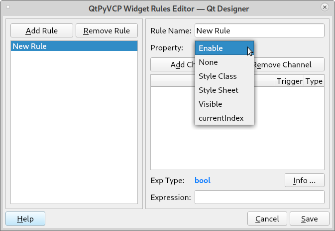
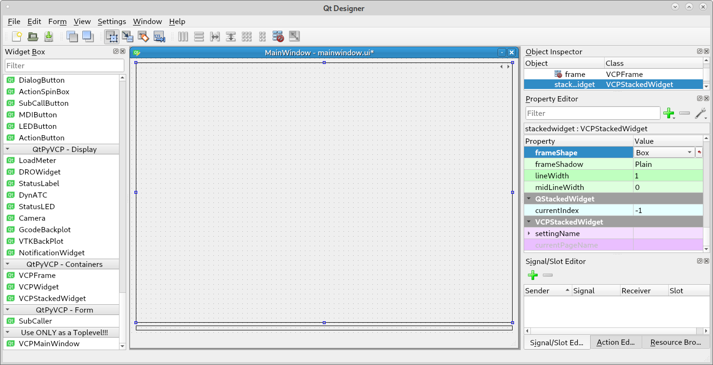
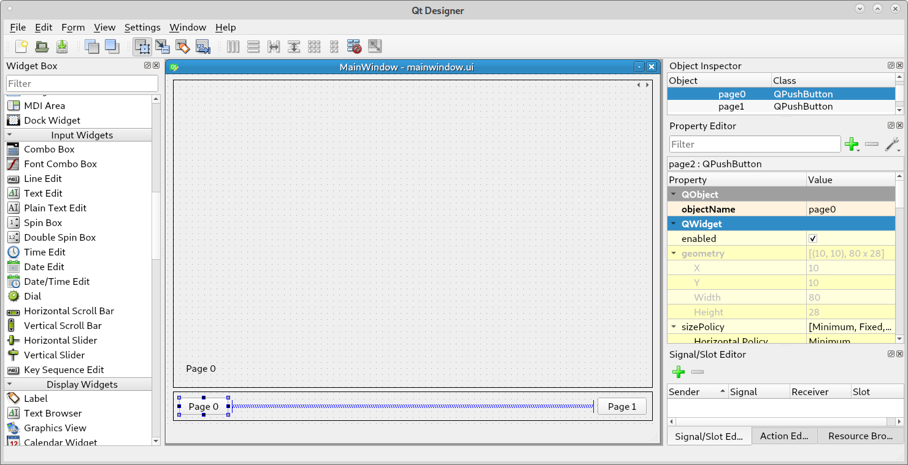
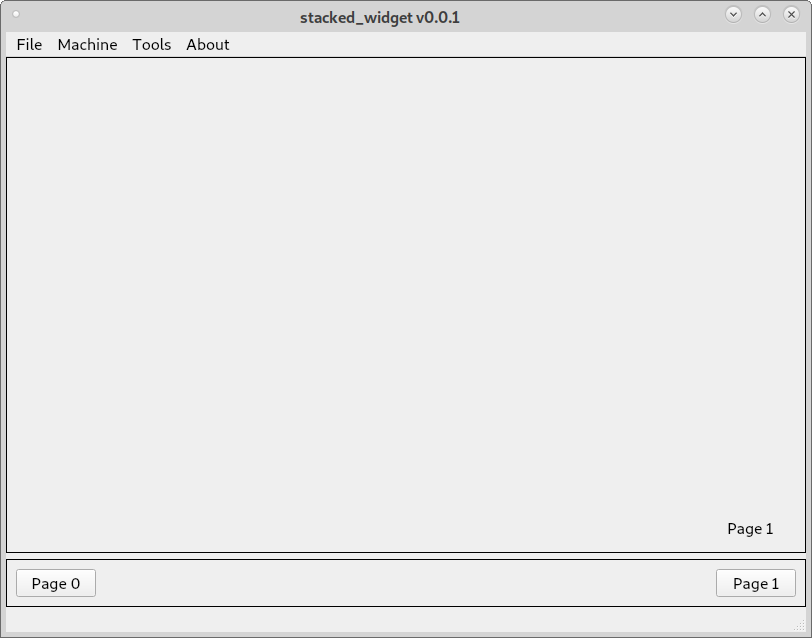

VCP Stacked Widget
The VCP Stacked Widget is a container with multiple pages. The pages can be accessed with buttons or changed by Python code as needed.
The VCP Stacked Widget also has Rules you can set to control the following.
Enable
Style Class
Style Sheet
Visible
Current Index
For more information about Rules see the Widget Rules
To open the Rules Editor double left click on the VCP Stacked Widget.
This example is using the VCP Template to create a blank screen.
Start by dragging a VCPStackedWidget and a VCPFrame into the mainwindow. Change the frameShape to Box so you can see them better.
Notice in the upper right corner of the stacked widget there are a left and right arrow symbol. This is how you navigate through the pages while adding widgets.
Changing pages on a stacked widget is done by setting the current index. This can be done with a rule or in the mainwindow.py file. You can have navigation buttons to select the page to show.
Add a couple of push buttons and name them page0 and page1. Remember the object name must be unique so if you have page_0 as the name of one of your stacked widget pages you can’t use that again. Next add a label to each page so we can tell the pages change when we press the buttons.
In the mainwindow.py file we add the following highlighted lines of code. Be sure to check indentation carefully.
from qtpyvcp.widgets.form_widgets.main_window import VCPMainWindow
# Setup logging
from qtpyvcp.utilities import logger
LOG = logger.getLogger('qtpyvcp.' + __name__)
class MyMainWindow(VCPMainWindow):
"""Main window class for the VCP."""
def __init__(self, *args, **kwargs):
super(MyMainWindow, self).__init__(*args, **kwargs)
self.page0.clicked.connect(self.setPage0)
self.page1.clicked.connect(self.setPage1)
# add any custom methods here
def setPage0(self):
self.stackedwidget.setCurrentIndex(0)
def setPage1(self):
self.stackedwidget.setCurrentIndex(1)
The clicked.connect() makes a connection between the button and the method. So when you click a button the connected method runs the code to change pages.
